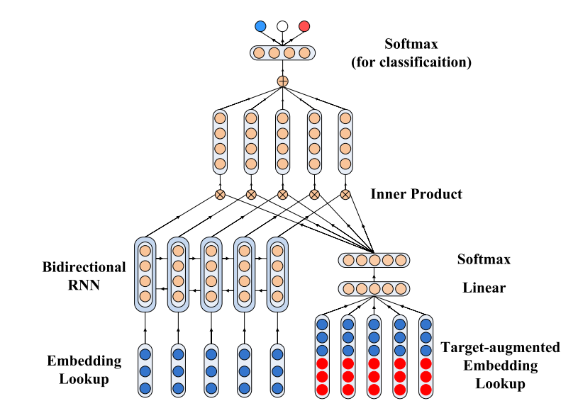
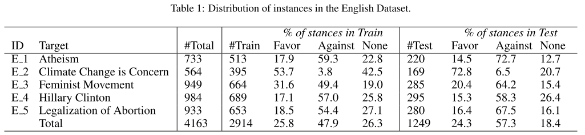
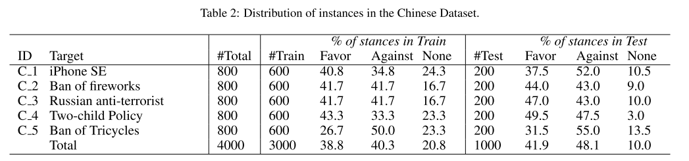
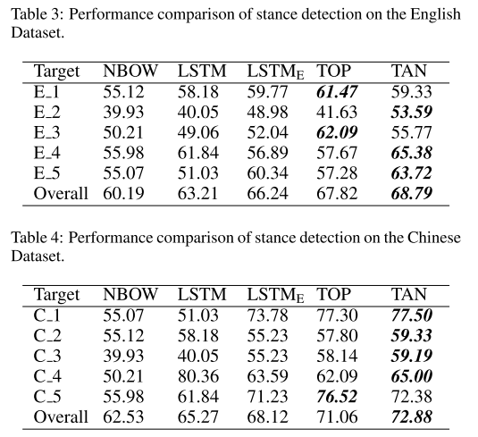
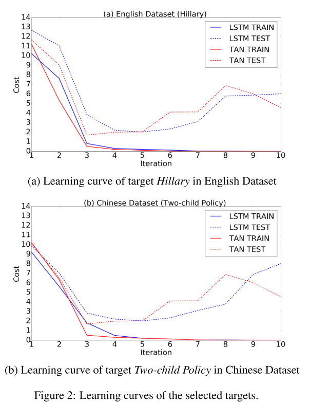
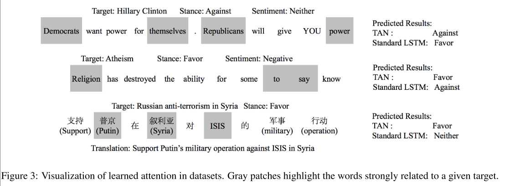
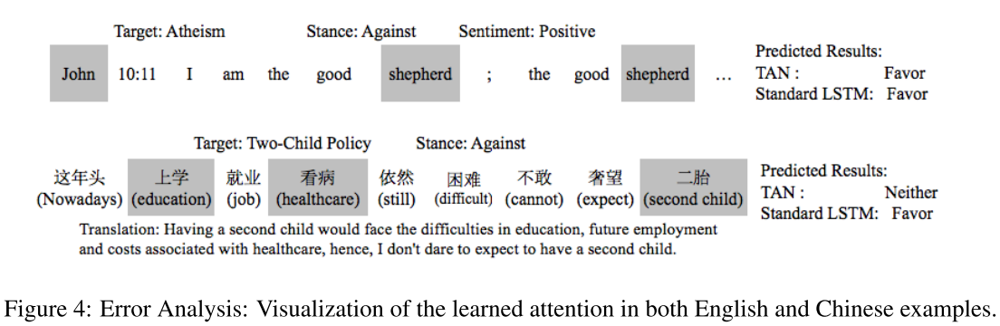

摘要
立场检测任务，是给定一段文本与一个特定目标，得到文本编写者对于这个目标所持的立场。这个任务与 aspect-level 的情感分类最主要的区别是，给定的目标可能没有在文本中显式的出现。针对这个问题，作者 Du 设计了一种基于神经网络的模型，将目标信息与注意力机制结合，定位出文本中对立场检测重要的部分。Du 的模型分别在中文与英文数据集上进行了测试，得到了 SOTA 的效果。
写完笔记之后最后填，概述文章的内容，以后查阅笔记的时候先看这一段。
论文原文
Stance Classification with Target-Specific Neural Attention Networks
IJCAI 2017, Jiachen Du et al, Shenzhen Graduate School, Harbin Institute of Technology, Shenzhen, China
1 简介
随着网络的发展，越来越多的人在线上媒体表达自己的观点。然而，比起判断一段文本的极性，很多的应用场景里更关注与判断文本作者对某个目标的立场。比如美国大选。
对于立场分析的早期研究关注于对论坛和新闻的立场检测。随着社交媒体的发展，更多的人关注于在微博平台上的应用，这有很多应用价值。
立场检测被定义为一个分类问题，为给定的一段文本与一个特定立场，指派 {支持，反对，其他} 其中的一个标签。
在已有的研究中，有很多使用特征工程手工从中抽取特征的，也有使用 CNN/RNN 等经典网络结构的。但这些方法都忽略了目标信息。因此，作者 Du，提出了他妈的模型 Target-specific Attentional Network (TAN) 将目标信息应用在立场检测中。他们的模型利用了最新的针对目标信息的注意力特征抽取器，首先，将目标与文本的词向量连接起来，然后用一个全连接网络学习注意力信号量，让分类器关关注于重要的部分。实验结果显示，在中文与英文数据集上，TAN 模型取得了 SOTA 的结果。
Du 工作的主要贡献有：
- 提出了针对目标的注意力抽取计算方式。使得他们的模型可以根据目标信息从文本中抽取出最重要的部分。
- 提出了一个有监督模型，TAN。这个模型结合了注意力与 LSTM。
- 在 Semeval-2016 (英文数据集) 和 NLPCC-2016 (中文数据集) 上进行了实验，TAN 模型超过了最好水平。并且通过对注意力层的可视化，说明了为何这么模型有效果。
2 相关工作
Augenstein et al. EMNLP 2016 对文本和目标分别使用一个 RNN 模型来做立场检测。同时还使用了大量的无标记 Twitter 预料来预测与任务相关的 hashtag，对 word embedding 进行初始化。
在更通用的情感分析领域，Tai et al, ACL 2015 使用了树形结构的 RNN。 Yang et al., ACL 2016 在 seq2seq 的文档层面的分类任务中使用了注意力机制模型。到目前为止，还没有为立场分类提出过相应的注意力层计算方式。
3 模型
如前面所提到的，同时考虑文本信息与目标信息，有可能会提高对立场检测的效果。在这个动机下，作者提出了结合 RNN 与 注意力机制的神经网络模型。称作 Target-specific Attention Neural Network (TAN)。模型的结构如下：

模型主要有两部分，一个使用 RNN 的特征抽取器，以及一个全连接层计算分配注意力后的特征。
3.1 RNN 部分
在他们的模型中，使用 LSTM 中每个 step 的隐层状态，对应文本中的词。模型中使用了双向 LSTM 。连接正向与反向 LSTM 的隐层状态值来表示文本中的每个词。
3.2 结合目标信息的词向量
一个长度为 $N$ 的目标序列，用 $[z_1, z_2, …, Z_N]$ 表示，其中 $\mathbb{R}^{d’}$ 是 $d’$ 维的向量。由于 word embedding 可以展示的是词的线性结构，因此在词级别上进行向量相加依然保有一定的语义，作者 Du 用 $\tilde{z}$ 表示更压缩的目标信息：
$$ \bar{z} = \frac{1}{N} \sum^{N}_{n=1} z_n $$
因此，结合目标 $Z$ 的词向量为：
$$ e^{z}_{t} = x_t \oplus \bar{z} $$
其中 $\oplus$ 表示向量的连接操作。因此，如果文本词向量的维度是 $d$，目标信息向量的维度是 $d’$ ，结合目标信息的词向量 $e^z_t$ 的维度是 $(d + d’)$ 。
3.3 目标信息的注意力权重计算
作者用全连接层训练注意力权重：
$$ {a’}_t = W_a e_t^z + b_a $$
其中 $W_a$ 和 $b_a$ 是注意力抽取中的权重与偏置项。
为了获得更稳定的注意力值，作者将注意力向量 $[{a’}_1, {a’}_2,…, {a’}_T]$ 输入到 softmax 层来得到最终的注意力值：
$$ a_t = softmax(a_t) = \frac{e^{{a'}_t}}{\sum^T_{i=1}e^{{a'}_i}} $$
3.4 立场分类
用注意力值 $a_t$ 和对应的文本 RNN 隐层状态 $h_t$ 的乘积来表示第 $t$ 个字。用所有字的平均值来表示整个序列：
$$ s = \frac{1}{T} \sum^{T-1}_{t=1} a_t h_t $$
其中 $s \in \mathbb{R}^d$。用这个向量作为序列分类的特征。
$$ p = softamx(W_{clf}s + b_{clf}) $$
其中 $p \in \mathbb{R}^C$，是这个向量对应立场的预测概率。这里 $C$ 是立场类别的数量，$W_{clf}$ 和 $b_{clf}$ 是分类层的训练参数。
3.5 模型训练
作者使用交叉熵损失损失来端到端的训练模型。对于一组训练数据 ${x^i, z^i, y^i}$，其中 $x^i$ 是第 $i$ 个需要预测的文本，$z^i$ 是给定的目标，$y_i$ 是立场类别的 one-hot 表示。模型可以表示为一个黑箱函数 $f(x,z)$，输出是一个向量，对应各个立场的概率。训练目标是最小化损失函数：
$$\mathcal{L} = - \sum_i \sum_j y_j^i log f_j(X_i, z_i) + \lambda | \theta |^2 $$
其中 $\lambda | \theta |^2$ 是 L2 正则项。
模型是一组标准的 LSTM 与 softmax 分类器，只多出一组 ${W_a, b_a}$ 的注意力层。
4 模型评估
本节先介绍实验设置，然后与其他 baseline 进行比较，最后可视化注意力层，表明注意力抽取层的有效性。
4.1 实验设置
数据集
为了检验模型效果，作者在分别在中文与英文的立场检测任务上进行了实验。
英文数据集 Semeval-2016 Task 6 。这个数据集中有大约 4,000 条推特，每条推特有属于一个话题，共有 5 个话题 「Atheism, Climate Change is a Real Concern, Feminist Movement, Hillary Clinton, Legalization of Abortion」。Table 1 是这个数据集的统计信息。

中文数据集 NLPCC-2016 中文立场检测任务。这个数据集与 Semeval-2016 相似。共有 3,000 跳中文微博，5 个目标，3 个立场标签。对于每个目标，有 600 个训练数据和 200 个测试数据。Table 2 展示了这个数据集的统计信息。

评价指标
使用在 Favor（支持）和 Against（反对）类别上的 F1-score 作为评价指标：
$$ F_{Favor} = \frac{2P_{Favor}R_{Favor}}{P_{Favor}{R_{Favor}}} $$
$$ F_{Against} = \frac{2P_{Against}R_{Against}}{P_{Against}{R_{Against}}} $$
其中 $P$ 和 $R$ 是 precision（准确率） 和 recall（召回率）。然后对 $F_{Favor}$ 和 $F_{Against}$ 进行平均，作为最终的评价指标：
$$ F_{average} =\frac{F_{Favor} + F_{Against}}{2} $$
注意，最终的评价指标忽略了 {None} 这个类别。我们只关心在 Favor 和 Against 类别上的效果。
Baselines
作者对比的 baseline 方法有：
- Neural Bag-Of-Words (NBOW): 对文本的词向量家和，用 softmax 进行分类。
- LSTM : 没有目标信息与注意力机制的网络
- LSTM : 结合了目标信息的 embedding
- TOP: 各任务上效果最好的模型。
- Semeval-2016: MITER。模型有两个 RNN，第一个 RNN 在无标签的推特数据训练 task 相关的 hashtag 的 embedding，用来初始化第二个 RNN。 用对应数据集训练第二个 RNN 进行分类。Augenstein et al., 2016)
- NLPCC-2016： RUC_MMC。这个方法中分别对 5 个目标训练了对应的 5 个模型。每个模型中有 5 中手工抽取的特征，然后用 SVM 和 随机森林进行分类 Xu et al., 2016
训练设置
对每个目标分别训练一个模型。将所有模型的预测结果拼起来，作为模型的最终结果。所有模型使用相同的超参数设置。在 5-fold 交叉验证上选择最优参数。
模型 Embedding 使用 Mikolov et al., 2013 的方法进行初始化。从 Twitter 和新浪微博上抓取无标签数据进行训练。使用 U (-0.01, 0.01) 的均匀分布进行初始化。词向量维度为 300， LSTM 电源的纬度为 100.使用 Adam 作为优化器，learning rate 为 $5e-4$，$\beta_1$ 为 0.9，$\beta_2$ 为 0.999，$\epsilon$ 为 $1e-8$ 。所有模型使用大小为 50 的 mini-batch 进行训练。
4.2 结果

中文比英文高，可能的原因是中文数据集更均匀。
NBOW 和 LSTM 未引入目标信息，效果不佳。 引入目标信息的 $LSTM_E$ 分数有 3.03% 左右的提升，说明目标信息有效果。$TAN$ 增加注意力后，比 $LSTM_E$ 又高出 3.54% 左右，说明注意力机制有效。TAN 模型在中文与英文上都超过了最佳模型，说明 TAN 是与语言类型无关的模型。
4.3 定性分析：
学习曲线

中文与英文数据集上 TAN 均在 3 个迭代后收敛，而标准 LSTM 需要 5 次迭代。并且 TAN 的 loss 更低。说明 TAN 模型在准确度与时间复杂度上都更优。
注意力可视化

在注意力的上方写出了对应的目标，情感，立场，右侧为 TAN 和标准 LSTM 给出的预测结果。可视化表明注意力机制可以给与目标信息更相关的词赋予更高的权重。例子中的情感与立场信息并不一致，说明立场分类与情感分类有本质上的区别。TAN 的预测结果是正确的， LSTM 的预测结果是错误的。
4.4 错误分析

上图分别给出了一个英文与中文的错误分类例子。英文例子中，是一句从圣经中引用的话。因此正确的预测立场需要一些额外的背景知识。中文例子中，生二胎会引起对看病上学的担忧，所以文本作者持反对立场。模型正确的分配的注意力，但给出了错误的结果。
5 总结
本篇论文提出了一个基于神经网络的立场检测模型。本文的主要贡献是结合立场信息与注意力机制。实验证明所提出的方法超过了 baseline。注意力可视化说明所提出的模型有能力抽取出对立场检测重要的文本。
进一步的工作，将关注于在其他的 SOTA 模型中引入注意力机制。以及用更灵活的方法引入额外的信息来提升立场检测的效果。
Notes
文章结构清晰，模型思路直接。进一步方向是引入额外信息，以及使用更好的特征抽取方式。模型实现简单，推荐作为 baseline 使用。